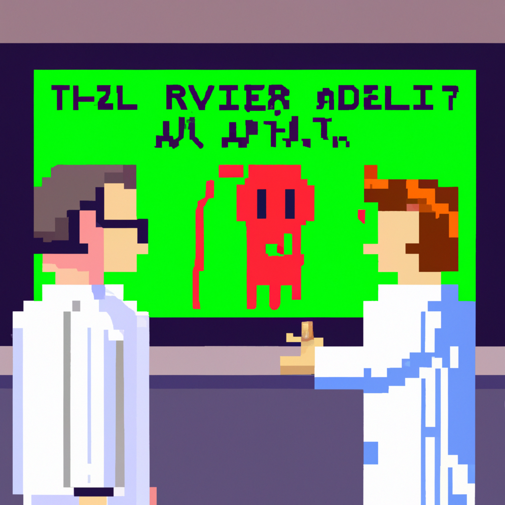

Why AI will never replace the radiologist
AI is becoming increasingly popular and powerful in many areas of medical imaging, and many people are beginning to believe that it could eventually replace the radiologist. However, I do not believe that this will ever be the case, and here’s why.
First and foremost, AI is not able to make the same clinical decisions that a human radiologist can. AI can detect anomalies and patterns in medical images, but it does not have the same level of understanding of patient history or medical context that a radiologist does. This means that AI is not able to identify subtle abnormalities or assess the risk of a particular situation like a human can.
Second, AI is still not able to spot the subtle nuances in medical images that a human radiologist can. AI is still learning and does not have the same level of expertise or experience that a human does in interpreting medical images.
Finally, AI might be able to spot more anomalies and abnormalities in medical images than a human radiologist can, but AI will never be able to provide the same level of care and compassion that a human radiologist does. AI will never be able to look at a patient and provide the same emotional connection that a human radiologist can.
In conclusion, AI will never be able to replace the radiologist. AI can assist radiologists in their work, but it will never be able to provide the same level of care and understanding to patients that a human radiologist can.